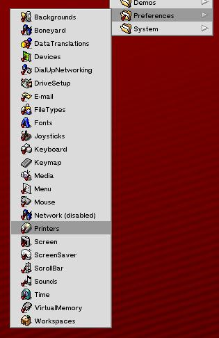
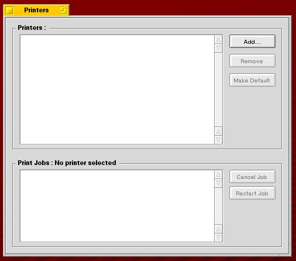
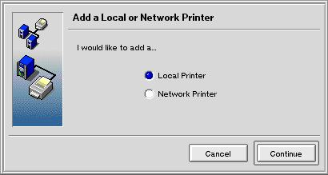
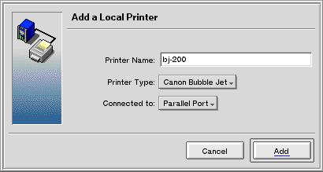

TODO!
Installation
- Open Printers preference panel:
 
- Click Add button to add a new printer spool:

- Choose Local Printer and click Ok button. The Add Local Printer window show up:

- Click Add button to validate printer spool settings.
The Printer Model Canon Bubble Jet window show up: